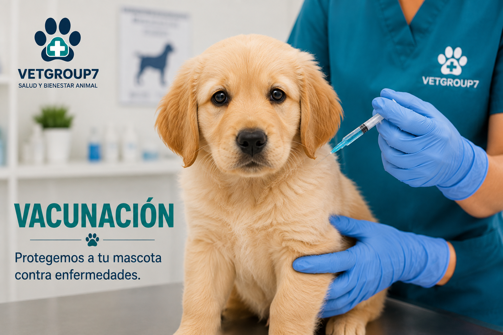
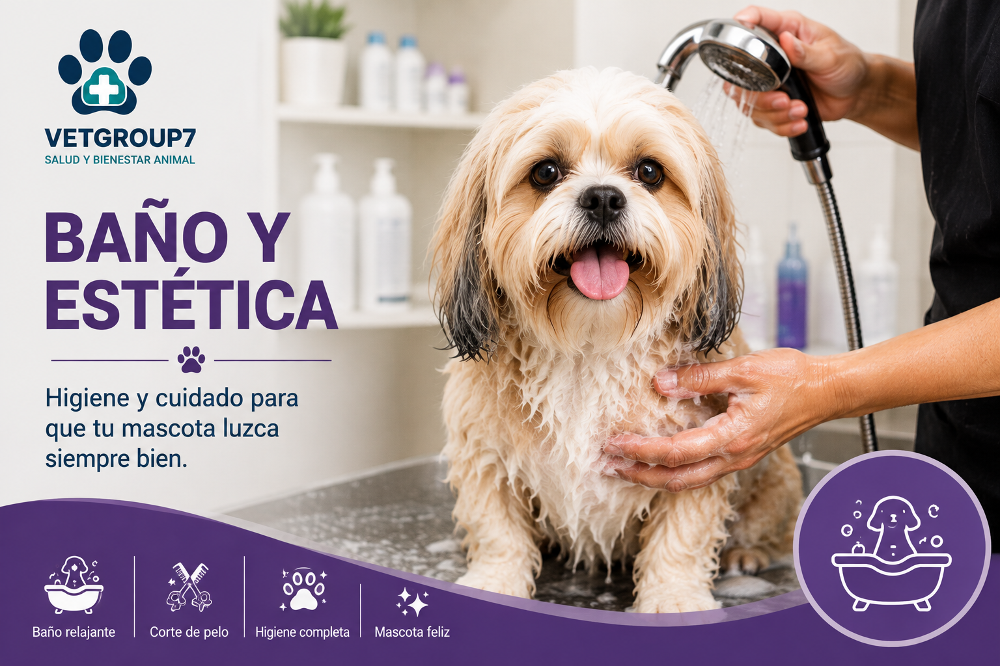

Cuidados que dejan huellas felices
Una mascota sana necesita atención diaria, alimentación adecuada, higiene y visitas preventivas al veterinario. Aquí encontrarás recomendaciones sencillas para acompañarla en cada etapa de su vida.
Ver recomendacionesBienestar integral para tu mascota
El cuidado responsable combina hábitos en el hogar con orientación profesional. Las necesidades pueden cambiar según la especie, la edad, el tamaño y el estado de salud de cada animal.
Cuidados básicos
Estas acciones ayudan a mantener una rutina saludable y segura:
- Proporcionar agua limpia y fresca durante todo el día.
- Preparar un espacio cómodo, ventilado y protegido del clima.
- Ofrecer ejercicio, juegos y momentos de socialización.
- Observar cambios en el apetito, el ánimo o el comportamiento.
- Mantener su identificación y datos de contacto actualizados.
Alimentación
Una dieta equilibrada favorece el crecimiento y la energía diaria:
- Selecciona alimento apropiado para su especie y etapa de vida.
- Respeta las porciones y horarios recomendados.
- Evita ofrecer sobras, huesos cocidos o alimentos desconocidos.
- Controla su peso y consulta si notas cambios repentinos.
- Realiza cualquier cambio de alimento de manera gradual.
Higiene
La frecuencia del aseo depende del tipo de mascota y de su pelaje.
- Cepilla el pelaje para retirar suciedad y pelo suelto.
- Revisa periódicamente ojos, orejas, dientes, piel y uñas.
- Utiliza únicamente productos diseñados para animales.
- Lava sus recipientes, juguetes, cama y área de descanso.
- Solicita orientación antes de realizar baños muy frecuentes.
Vacunación y prevención
El veterinario debe indicar el plan adecuado para cada mascota.
- Lleva un registro de vacunas, desparasitación y consultas.
- Cumple las fechas de refuerzo indicadas por el profesional.
- Aplica medidas de control contra pulgas y garrapatas.
- Evita el contacto con animales enfermos o desconocidos.
- Realiza revisiones preventivas aunque no presente síntomas.



Guía básica de cuidados
Esta tabla sirve como orientación general. La frecuencia puede variar de acuerdo con las necesidades particulares de cada mascota.
| Cuidado | Frecuencia orientativa | Recomendación |
|---|---|---|
| Agua | Todos los días | Renovar el agua y limpiar el recipiente. |
| Alimentación | Según la edad y el plan indicado | Medir las porciones y evitar cambios bruscos. |
| Cepillado | Según el tipo de pelaje | Usar un cepillo adecuado y revisar la piel. |
| Actividad física | Diariamente | Adaptarla a su especie, edad y condición física. |
| Consulta preventiva | Según indique el veterinario | Llevar el historial de salud y vacunación. |
¿Notas algo fuera de lo habitual?
La falta de apetito, el decaimiento, los vómitos repetidos, la dificultad para respirar o un cambio repentino de conducta requieren atención profesional. No administres medicamentos sin orientación veterinaria.